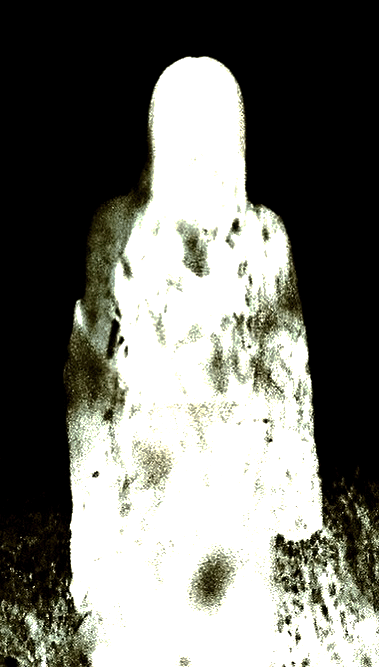

Projects

In Between
Experimental documentary film
December 19th, 2024

The Veil
Performance, Projection, AV
December 12th, 2024

Omnipresent Heart
E-stethescope explorations
December 02, 2024
Still Life
Material resonance, feedbacking
December 9th, 2024

Coney Island Psychoculture
Historical, handcrafted zine
July 20th, 2024
A Propaganda Project
Web Development
May 4th 2024
Metamorph
Text-based game in Twine
May 2nd 2024

My Vanity Tree
Functional sculpture
March 19th, 2023
Walls Evolve
Documenting my room's walls
December 19th, 2024

Split
Interactive P5.js Sketch.
December 19th, 2024
Series

Material Signatures
Time
whispers of the wind
Sound

The Rythm of Noise
Sound
negative space
MultiMedia

self portraits
Mixed media

People I Love
Photography

Channel Me
Photography
True Illusion
Documenting Visitations

Deadly Lovers
Photography

Passengers
Photography